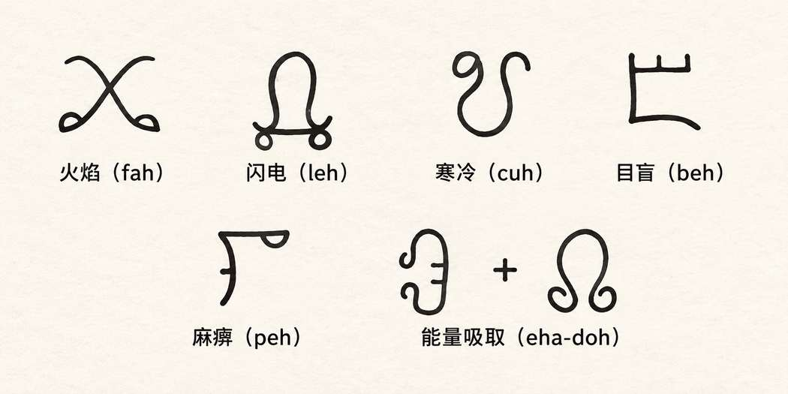

牧师 · Clerics
一环法术 · First Level Spells
侦测邪恶 · Detect Evil
此法术大致可以辨出邪恶的程度（微弱、中等、强烈、压倒性）及其性质（期待、恶意、幸灾乐祸等）。若邪恶强烈到压倒性，牧师每有 1 级，就有 10% 的概率察觉其总体倾向（守序、中立或混乱）。
侦测魔法 · Detect Magic
牧师只能察觉区域内存在微弱或强烈的魔法（参见同名魔法师法术）。
光亮术 · Light
若此法术施于生物的脸部或视觉器官前方，光亮会使其暂时失明（如同强光直射眼前），其攻击、防御、豁免检定乃至护甲等级都受到 −4 惩罚。另请注意，此法术本身不能移动，但可以施于可移动的物体或生物。
防护邪恶 · Protection From Evil
此法术会排斥使用天然（身体）武器、必须触碰受保护角色才能攻击的怪物。
二环法术 · Second Level Spells
占卜术 · Augury
此法术只预示未来半小时内的大致情形，因此回答不必过于精确。施法时，只需依据你掌握的信息，对角色的问题给出大致印象。
例如，角色问：“如果我们进入第三层，会顺利吗？”你可以回答：“活下来的人会发财！”原因是：角色若进入该层，会在入口附近遇到一头可怕的巨魔；队伍可能足够强，虽经苦战仍能击败它，而怪物守着 10,000 枚银币和一面 +1 盾牌。
侦测魅惑 · Detect Charm
被生物施放魅惑法术的目标可以进行对抗魔法的豁免检定。若豁免成功，“侦测魅惑”不会察觉到魅惑效果。
寻找陷阱 · Find Traps
若陷阱是魔法陷阱或被魔法隐藏，施法牧师每有 1 级，便有 10% 的概率辨认出其中涉及的魔法类型，例如变化系或预言系。
静默术（半径 15 尺） · Silence, 15' Radius
若此法术以具有魔法抗性的生物为目标，且其魔法抗性生效，则静默区域不会涵盖该生物。无论全部还是部分解除法术，只要解除范围延伸到原作用半径之外，静默效果都会消失。
定位物品 · Locate Object
除非同一类物品的外形大致相同，否则施法者无法借此法术寻找某个笼统类别的物品。例如，楼梯通常都有踏步，外形相似，因此施法者可以定位与自己施法时想象的楼梯相近的一段楼梯。但若要寻找珠宝、王冠等物品，就必须形成明确的心像；若作用范围内的目标与施法者熟悉的物品并不相似，法术便不会生效。简言之，施法者无法定位自己从未见过、且外形独特的物品。
祈祷术 · Prayer
若牧师施展“祈祷术”时，另一位侍奉同一神祇的牧师正在吟唱“圣歌术”，两种法术的效果可以累积：友方生物获得 +2，敌方生物受到 −2。两名牧师必须信奉同一宗教，而不只是阵营大致相同；施展“祈祷术”时，“圣歌术”必须仍在持续。
与死者交谈 · Speak With Dead
DM 很容易过度宽容，因此此法术常被滥用。牧师提问时应遵循以下规则：1）回答简短；2）完全按字面理解问题；3）若死者生前不认同施法者的角色、职业或阵营，应尽量含糊其辞、避重就轻。请记住，“与死者交谈”意味着死者的本质仍存在于某处；若它能记住问题的答案，也可能记得其他事情……
蛇魅术 · Snake Charm
此法术对任何蛇类或蛇形怪物都有效，例如那伽与库奥托。生命骰限制、魔法抗性与豁免检定始终适用。
与动物交谈 · Speak With Animals
此法术不一定会使被交谈的动物成为牧师忠实友好的伙伴。对于本性敌对且相当聪明的动物，其回答很可能简短而闪烁其词；愚笨的动物则可能说些毫无意义的话！记得以动物的身份和思维方式扮演它。
三环法术 · Third Level Spells
操纵死尸 · Animate Dead
当然可以操纵半人类、人形生物乃至人类的骷髅或尸体。若被操纵的生物基础生命骰数超过 1（或 1+），可操纵的骷髅或僵尸数量应按生命骰数计算，而不是按个体数量计算。举例来说，6 级牧师可以操纵 6 具生前生命骰数少于 2 的人类或人形生物骷髅；也可以操纵 3 具生前生命骰数少于 3、但至少为 2 的骷髅；或者操纵 1 具生前生命骰数为 6、但少于 7 的不死生物。
被操纵生物每比通常类型多 1 个生命骰，骷髅或僵尸就额外获得 1 个生命骰。例如，火巨人有 11 个生命骰，比通常骷髅多 10 个，因此其骷髅形态有 1+10 个生命骰（11d8）；火巨人僵尸则比通常僵尸多 10 个生命骰，因此有 2+10 个生命骰（12d8）。注意：这不会令 2 级或更高等级角色变成拥有更多生命骰的骷髅或僵尸；这类不死生物仍只是拥有 1 或 2 个生命骰的人类骷髅或僵尸。
持续光亮术 · Continual Light
与“光亮术”一样，若此法术施在生物的视觉器官上，也会使其暂时失明。法术还可以施于一件较小的物品，再用不透光的容器将物品封起来；容器打开前，光就不会透出。如此便能得到一种无需燃料、也不会熄灭的持续光源。（“黑暗术”是这种装置的克星……）
治疗失明 · Cure Blindness
此法术不能恢复已经失去的视觉器官，无论其损失源于受伤还是疾病。DM 可以裁定此法术只消除魔法造成的失明，并治疗白内障、青光眼以及常见的近视、远视、散光等疾病或类似病症；也可以让它治疗其他眼部疾病，但不包括上述无法恢复的视觉器官损失。
解除魔法 · Dispel Magic
若此法术施于魔法物品，而该物品未通过豁免检定，则它必定会有 1 轮无法运作。若物品不在任何生物持有之中，则不能进行豁免检定，必定停止运作 1 轮。神器与遗物不受此效果影响。要产生上述效果，“解除魔法”必须直接以物品为目标，不能以其他物体或生物为目标。
守卫刻文 · Glyph of Warding
若有牧师在场并确认存在守卫刻文，相关的魔法师之后便可使用“抹消术”尝试移除它，成功率可能为 50% + 每级 2%（魔法师等级）。守卫刻文的图案和名称可由 DM 自行设计，也可查阅百科全书，寻找有趣的文字体系；《灰鹰世界》也提供了其他符文与刻文。以下是其中一种刻文体系的示例：

“侦测陷阱”能够看出刻文的形状；牧师或许会根据过往经验认出其名称，并尝试解除——而且可能成功。
四环法术 · Fourth Level Spells
侦测谎言 · Detect Lie
此法术不会揭示真相，也不一定会揭露对真相的回避；它赋予施法者辨别谎言的能力。
五环法术 · Fifth Level Spells
赎罪术 · Atonement
作为战役世界的主宰，DM 必须扮演裁决角色是否赎罪的超自然力量。若角色的行为显得非常真诚，神祇便倾向于允许其通过此法术赎罪，且只要求很少甚至不要求额外献祭；具体要求取决于神祇的整体本性，可能只是往施舍箱投入几枚硬币，也可能是为寻找圣遗物而完成重大任务。角色越不真诚，完成法术所需的行动就越艰难。例如，神祇可能以空洞的声音命令：“离开这里，带着欧西里斯的大祭司和其神殿全体祭司作为献祭返回，否则永远不要回来，以此证明你真正悔改！”在完成任务之前，这位神祇不会再给出任何回应。
神谕术 · Commune
所有问题必须连续提出，并尽可能在短时间内完成，否则会对超自然力量造成过多打扰。若施法者停顿太久或转去做其他事情，法术就会立即结束。神祇也可能回答“不知道”；毕竟大多数神祇并非全知。
位面转移术 · Plane Shift
材料成分类似音叉。适时敲击它，便能使相关生物的能量振动与目标位面相匹配。DM 需要决定哪些音调对应哪些位面；施法者拿出金属棒时，告知其发出的音高即可。例如，升 A 可能将生物送往星界，降 A 送往风元素位面，A 音则送往以太位面。DM 自然也可以加入八度音，甚至用和弦把生物送到某个次级位面，例如升 F 小调可能把施法者或目标送到九层地狱。
任务术 · Quest
若受术者同意接受任务，即使这种同意是以武力或欺骗取得，也不能再进行避免任务的豁免检定。同一宗教的信徒也不能逃避公正且应得的任务；即使阵营相同，若任务公正且适当，受术者想要抗拒也须承受 −4 惩罚。与受术者信奉同一宗教、且等级更高的牧师可以解除任务。某些神器或遗物也可能解除此法术；任何神祇都能做到，但只能亲自出手。
六环法术 · Sixth Level Spells
空中仆役 · Aerial Servant
施法者应向 DM 展示施法时使用了何种防护铭文。原书提及三种形式：魔法圆环、五芒星与三角形。
刀刃屏障 · Blade Barrier
此法术完全固定。只有围绕法术中心旋转的刀刃在运动，屏障本身不会移动。刀刃旋转平面可以是水平、垂直或任何角度。法术发动时已处于屏障范围内的生物可以进行豁免检定；若成功，便躲过刀刃，不受伤害。
召唤动物 · Conjure Animals
可召唤的生物列表见附录 L“召唤动物”。
寻路术 · Find The Path
此法术和“定位物品”一样容易被滥用。地点不是物品。法术可以帮助施法者找到进入或离开某个区域的道路，但必须是地点本身已知或被明确指定，而不能只以该处可能藏有什么来描述。例如，可以寻找一片梣树林，却不能寻找“绿龙曾居住的森林”——后者寻找的是物品或生物，而非地点。类似地，不能用“寻路术”寻找一大堆白金的所在；但可以用它寻找已知藏有这批钱币的楼层，或指向一处有水池的洞穴。法术找到的是地点或区域的道路，其中有什么物品并不重要。
治疗术 · Heal
此法术不能治愈与法术或脑部损伤无关的严重精神障碍。
召回术 · Word Of Recall
牧师每跨越一个位面、远离指定圣所所在位面，就累积 10% 的概率，永久迷失在途中穿越的星界或以太空间中。
七环法术 · Seventh Level Spells
星界法术 · Astral Spell
任何魔法物品都能进入星界，但大多数物品到了星界，或到了远离主物质位面的其他位面，都会失去魔力。若 DM 判定物品所含法术在某个位面仍能运作，它便会在那里生效。+3 或更高加值的护甲与武器也可能在其他位面运作，但由 DM 决定。神器与遗物应允许在任何地方运作。依赖特定位面力量的物品，在其力量来源位面上通常会强大得多，例如火元素位面上的抗火戒指，或负能量物质位面上的吸取生命之剑。遭遇生物见附录 C“随机怪物遭遇”中的星界／以太位面遭遇表。
控制天气 · Control Weather
要确定施法时的天气，DM 必须知道当地气候与季节。还要根据所在区域确定天空状况（多云、有雾、局部多云、晴朗）、降水、风速与风向、气温等。有了这些信息，告知施法者当前天气并不困难。
地震术 · Earthquake
地基直达基岩、结构极为坚固的建筑只承受一半伤害。如此建造的城堡若豁免检定结果高于 50%，只承受四分之一伤害。若法术区域内有与施法牧师阵营力量相悖的大地精类，其存在会抵消 10%–100% 的法术效果（掷 d10，掷出 0 即视为 100%）。
神门术 · Gate
若 DM 不清楚“神门术”召来的存在有哪些仆从，就必须让被召唤者亲自前来。若事情微不足道，它可能转身离去或发动攻击；若事情有一定重要性，它可能采取积极行动解决问题，之后要求适当回报；若事情紧急，它可能先按情况处理，再依其意愿索取报酬。
例如，阿斯摩蒂尔可能派一名深狱炼魔来了解情况，而守序善良神祇可能派来一只麒麟。被召唤者什么也不做便离开的概率：事情微不足道时为 20%，中等重要时为 15%；非常重要时为 1%–50%。其中 1% 表示被召唤者认为自己能够轻易解决问题，无论其态度是喜欢还是厌恶；50% 则表示情况有风险且令其不快。
例如，混乱邪恶角色召唤阿斯摩蒂尔来对付六型恶魔，可能只是小事，也可能因牵涉守序邪恶神器而变得重要。只要有机会，阿斯摩蒂尔一定会连召唤者与恶魔一起消灭。反之，若召唤阿斯摩蒂尔与巴哈姆特对抗，除非此事关系到地狱的重大利益，否则他很可能转身迅速逃走。
神圣／邪恶之言 · Holy/Unholy Word
说话者必须身处自己发言所源自的位面，才能将其他生物送回其原生位面。例如，身在主物质位面的魔鬼无法用此法术送走任何生物；若它身处地狱，则可以。被送回原生位面的生物 1 天内不能返回。被此法术减速的生物会失去第一轮攻击，此后每逢奇数轮攻击也会失去攻击，直到效果结束。
复原术 · Restoration
此法术能够治愈任何形式的精神错乱。